DALE CARNEGIE · HOW TO WIN FRIENDS · PART TWO · CHAPTER 3 · PDF p88–95
If You Don't Do This, You Are Headed for Trouble
The "this" is remembering people's names. A person's own name matters more to them than almost any other word, so getting it right is a quiet compliment and getting it wrong is a quiet insult.
Carnegie builds the chapter around people who rose far on this one habit: a brickyard boy who could greet fifty thousand people by first name and helped put a President in office, a steel magnate who named a mill after the customer he wanted, and a President who remembered a shy mechanic he had met once. He shows the other side too: a bank manager's angry letter over a misspelled name, and a salesman whose customer cried because, after fifteen years, someone finally said his full name properly. Then he hands you a method (Napoleon III's: ask again, ask the spelling, repeat it, link it to the face, write it down) and knocks away the usual excuse, "I'm too busy". The chapter ends at a sandwich counter, where one "Hello, Eunice" turned one lettuce leaf into three.
Principle 3 of Part Two
Remember that a person's name is to that person the sweetest and most important sound in any language.
How the chapter fits together
pdf p88 · read this first
Where it sits. This is the third of the "Six Ways to Make People Like You" in Part Two. Before it came be genuinely interested in other people (Ch.4) and smile (Ch.5). After it come be a good listener (Ch.7), talk in terms of the other person's interests (Ch.8) and make the other person feel important, sincerely (Ch.9). Remembering a name is the smallest, most concrete proof of the interest Ch.4 asks for, and the cheapest way to make someone feel important (Ch.9). It also feeds Part One's idea that everyone craves to feel important (Ch.2).
The argument as a chain. Each row builds on the one before it.
Claimyour own name interests you more than all other names together
Soremember + use it = a subtle complimentforget / misspell it = a sharp disadvantage
Principlea name is the sweetest sound to its owner
About the title: Carnegie holds back what "this" is until the end of the chapter, the way he likes to hold a punchline. The trouble he means is slow, not dramatic: every forgotten name chips a little goodwill away.
01 · THE OPENING STORY
Jim Farley: a brickyard boy who could greet fifty thousand people by name
pdf p88–89
Carnegie opens with a man who had almost none of the usual advantages (no money, no schooling, no family connections) and still reached the top of American politics. The point is to show how far one learnable habit can carry someone.
Stony Point, Rockland County, New York1898left school at 104 honorary degrees before 4650,000 first names
A hard start. The elder Jim Farley died in 1898 on the morning of a neighbour child's funeral. A restless horse, stabled for days in the snow and cold, kicked him as he led it to water, so the small village of Stony Point buried two people that week instead of one. His family was left with almost nothing: his wife, three young sons, and an insurance payout of only a few hundred dollars.
Work at ten. Young Jim, the eldest at ten, took a job at the local brickyard: carting sand, filling brick moulds, and setting the wet bricks out to bake in the sun. That was the end of his schooling; he never attended high school.
What he had instead. A friendly, easy manner that made people warm to him. Politics suited that, and as he rose he developed a remarkable memory for the names of the people he met.
Where it took him. By his mid-forties he held honorary degrees from four colleges, led the Democratic Party's national committee, and ran the US Post Office as Postmaster General.
The interview. Carnegie asked Farley the secret of his success. Farley said "hard work"; Carnegie told him not to joke. Farley turned the question round and asked what Carnegie thought it was. Carnegie's answer: the rumour that Farley knew ten thousand people on first-name terms. Farley put him right: the figure was fifty thousand.
Why it mattered. Carnegie is clear that this skill was not a party trick: Farley managed Franklin D. Roosevelt's 1932 presidential run, and his memory for names was one of the reasons it succeeded.
Guess first
Carnegie guessed Farley knew 10,000 people by first name. What was the real number Farley gave?
Pick a number.
Picture it
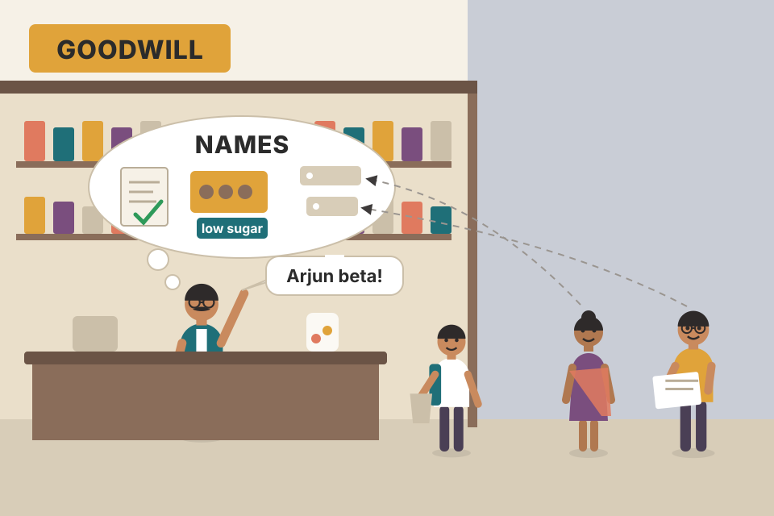
Every neighbourhood in India has one of these people: the kirana-shop uncle who greets you by name, asks whether your sister got through her exams, and knows your father takes the low-sugar biscuits. He went to school only until the eighth standard, yet half the colony would vote for him if he stood for the ward election. Most of his "goodwill capital" is names and small facts, collected one customer at a time.
Where it breaks: the shop uncle sees the same few hundred families every week, so repetition does the remembering for him. Farley's fifty thousand were scattered across a country; he needed a deliberate system (next plate), not just daily contact.
What's happening behind it
The book's explanation: Farley had no degree to impress people with, so he impressed them the one way that is open to everyone: he made each person feel remembered. Remembering someone's name is evidence that they mattered enough to you to stick.
Beyond the book: Farley served as Postmaster General from 1933 to 1940 and remained famous for this skill all his life. Psychologists would add that being remembered by a powerful person is a strong signal of status and belonging; it says "you are part of my world", which is exactly what a political organiser needs thousands of volunteers to feel.
At work
A team lead in a 200-person engineering org rarely has Farley's title, but has Farley's opportunity. The SRE you met once in an incident channel, the QA engineer on another floor, the new intern: calling them by name in the next thread costs you nothing and is remembered for months. When you later need a favour across teams (an urgent review, a late deploy window), the people who feel known by you say yes faster.
Interview angle. "How do you build relationships with stakeholders outside your team?" A concrete answer beats a generic one: "I keep a short note after every first meeting (name, role, what they are working on) and I follow up by name." That is Farley's method in one sentence.
Everyone's craving to feel important, the need a remembered name feeds: Ch.2 The Big Secret.
02 · THE SYSTEM
How Farley did it: a name plus a few facts, and a campaign run on letters
pdf p89
Farley's memory was not magic. He built a system during his years as a travelling salesman for a gypsum company and as town clerk of Stony Point. It started very simply:
Get the whole name, first and last, from every new person.
Collect a few facts to go with it: who is in their family, what they do for a living, how they vote.
Store name and facts together, as a single mental snapshot of that person.
Use the snapshot next time. A year on, Farley could greet the person, ask how their family was, and even ask how their garden flowers (the book mentions hollyhocks) were doing.
Carnegie's comment: no wonder he built a following.
The 1932 campaign. The same idea, scaled up:
Months of letters first. Long before the campaign officially started, Farley was sending out letters by the hundred every single day, aimed at supporters in the West and North-west.
Then a whirlwind tour:19 days, 20 states, 12,000 miles, using whatever moved (buggy, train, car, boat). A meal with the local people in each town, an open, personal talk, and on to the next stop.
Then the guest lists. Home again, he asked a single contact in every town he had visited to send him the names of everyone who had come.
Then a letter to every name. Thousands of people each received a personal note from him, addressed by first name ("Dear Bill", "Dear Jane") and signed with just "Jim".
Dated detail. Letters typed and signed by hand were the personal touch of 1932. The modern equivalent is a short, specific message after a meeting, not a mass email with a merge field.
Step through: one town on Farley's 1932 trip
Picture it
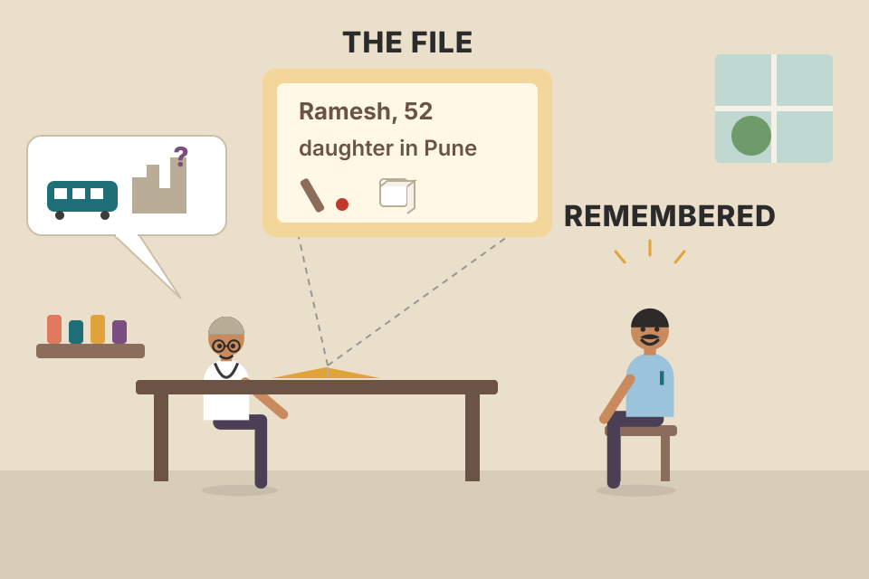
A good family doctor in a small town keeps a thin file for each patient. On the inside cover, in pencil: "Ramesh, 52, bank clerk, daughter in Pune, likes cricket, worried about sugar." When Ramesh walks in a year later, the doctor glances down and asks how the daughter is settling in Pune. Ramesh leaves thinking: he remembers me.
Where it breaks: the doctor's file sits on the desk; Farley's lived mainly in his head, and he trained his memory until it did. Notes help both, but a glance at a file cannot replace the warmth of actually caring how Pune is going.
What's happening behind it
The book's explanation: a name alone is thin; a name tied to a few personal facts becomes a person. Farley stored the whole picture, which is why he could follow up with a real question, not just a greeting. And the letters worked because each one was addressed and signed like a letter between friends.
Beyond the book: memory research backs the "whole picture" idea. Names are hard to remember because they are arbitrary labels with no meaning; when people in experiments were told a stranger's job was "baker" they recalled it far better than the surname "Baker" (the so-called Baker/baker effect, McWeeny and colleagues, 1987). Tying the name to meaningful facts gives the memory something to hold on to.
At work
Farley's system maps neatly onto a lead's week. After a first 1:1 with a new joiner, jot three lines: name (and how they pronounce it), what they worked on before, one thing outside work they mentioned. At the next 1:1, ask about it. After a cross-team design review, a two-line message to each reviewer by name ("Priya, your point about idempotency keys saved us a rewrite, thanks") is the "Dear Bill, signed Jim" letter of today.
Interview angle. "Tell me how you onboard new team members." Mentioning that you learn names, pronunciations and a bit of each person's background in week one shows people sense, not just process sense.
Connects to
Learning about people's families and interests is the root of Ch.4 (genuine interest) and Ch.8 (talk in terms of their interests): Ch.4, Ch.8.
03 · THE CORE IDEA
Your own name interests you more than every other name on earth
pdf p89
Here Carnegie states the idea the whole chapter rests on. Put all the other names in the world on one side and a person's own name on the other, and for most people their own name wins. Farley grasped this young. Two things follow:
Remember it and use it easily
That is a quiet compliment, and a powerful one. You said nothing flattering; remembering said it for you.
Forget it or misspell it
You have put yourself at a sharp disadvantage. The slight is just as silent, and just as clearly felt.
Carnegie's own blunder. To advertise a speaking course he was running in Paris, Carnegie sent a standard letter to every American living there. Local typists with shaky English typed in the names, and some came out wrong. The head of a big American bank's Paris branch was one of them, and he replied with a sharp, angry rebuke, all over the misspelling.
Why include such a small story? Because it shows the size of the reaction. A busy, senior man took the time to write an angry letter over a few wrong letters in his name. The invitation itself, whatever it offered, was lost. And Carnegie did not even type it; the mistake was still his.
Rewrite it
Each message gets someone's name wrong or skips it. Decide how you would fix it, then reveal a Carnegie-style version and what changed.
Picture it
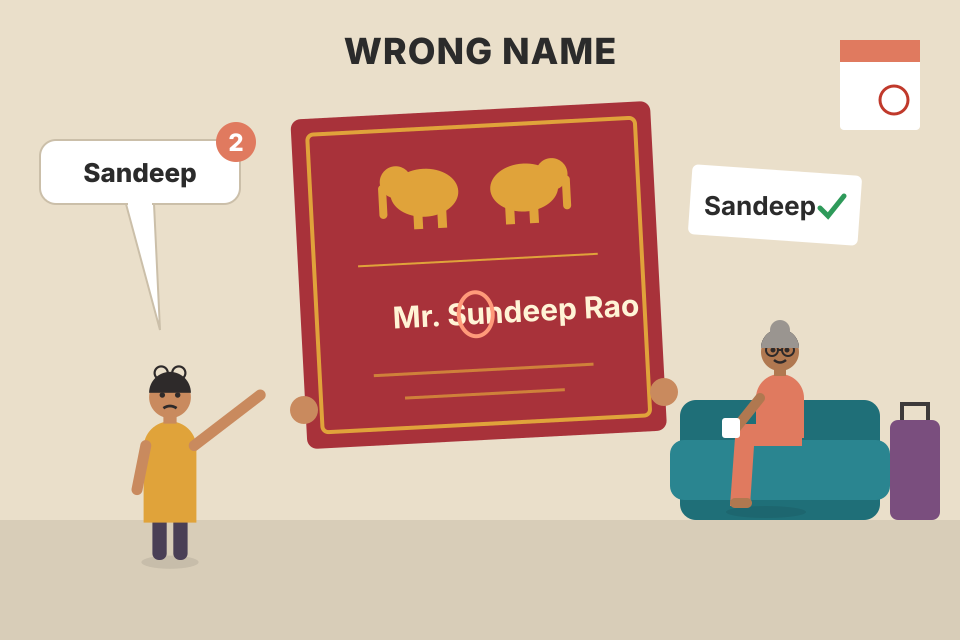
A wedding card arrives from a distant relative addressed to "Mr. Sundeep Rao and family". The card is beautiful, the invitation is kind, and the very first thing you notice is that it says Sundeep, not Sandeep. You still go to the wedding, but you mention it to your mother twice.
Where it breaks: family will forgive a typo because the relationship is already there. The bank manager had no relationship with Carnegie yet; the misspelling was his whole first impression, so it cost far more.
What's happening behind it
The book's explanation: a name is tied to a person's sense of self, so using it correctly feels like being recognised and using it wrongly feels like being treated as one of a crowd. The bank manager's anger was not about spelling; it was about being processed as a list entry.
Beyond the book: people notice their own name with remarkable sensitivity. In the classic "cocktail party" experiments (Neville Moray, 1959) listeners ignoring one ear of a headset rarely noticed anything said there, except their own name. Brain-imaging work (for example Carmody and Lewis, 2006) has found that hearing one's own name activates regions linked to self-related thinking more than hearing other names. A misspelling hits that same sensitive spot.
At work
The Paris typists are a mail-merge bug. Every system that sends "personal" email is Carnegie's form letter: if the name field is wrong, the personalisation backfires. Common culprits a backend engineer can fix: names forced into ASCII ("José" becomes "Jos?"), first/last-name splits that break single names and initials-based South Indian names ("R. Karthik" becomes first name "R."), length limits that cut "Venkatasubramanian" in half, and auto-capitalisation that turns "McDonald" into "Mcdonald" or "de Souza" into "De Souza". Store the name as the person typed it, ask what they want to be called, and test with real names from your user base.
For people, not systems: before you @-mention someone in Slack or tag them in a PR, check the spelling of their name. If your team spells a teammate's name two ways in docs, ask them which is right and fix the others.
Nicodemus Papadoulos: fifteen years of being called "Nick"
pdf p90
Carnegie admits some names really are hard to remember, especially if they are hard to pronounce. Many people's response is to not even try: they skip the name altogether or slide into an easy nickname. This story shows what that costs.
Sid Levy, salesmancustomer: Nicodemus Papadoulos15 years in the country
The situation. Sid Levy had been calling on a customer named Nicodemus Papadoulos for some time. Nearly everyone just called him "Nick".
The move. Before one visit, Levy deliberately practised the full name, saying it to himself several times. When he walked in he greeted the man by his whole name, formally and correctly.
The result. The customer was stunned and said nothing for what felt to Levy like several minutes. Then, with tears running down his face, he told Levy that in the fifteen years he had lived in the country, nobody had ever bothered to call him by his real name.
What the story adds. The nickname "Nick" was not rude, and everyone using it probably meant well. But it was convenient for them, not chosen by him. Levy's effort (a few minutes of practice in the car) was small; what it told the customer (you are worth getting right) was large.
Which response?
Picture it
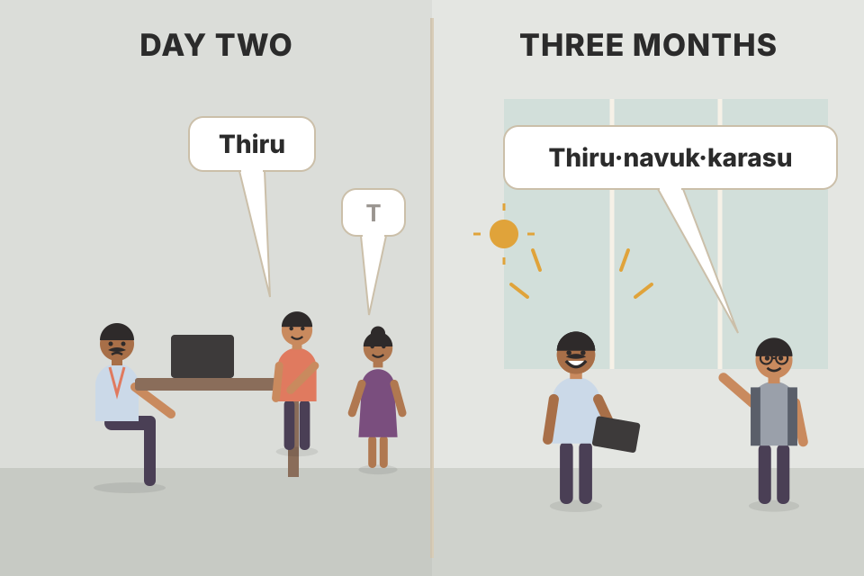
A new joiner from Chennai named Thirunavukkarasu joins a Gurugram office. By day two, everyone calls him "Thiru" or, worse, "T". Three months later a manager stops him in the corridor and says, slowly and correctly, "Thirunavukkarasu, I wanted to thank you for the release notes." He smiles all afternoon.
Where it breaks: many people with long names are genuinely happy with the short form, and some prefer it. Papadoulos was moved because the nickname had been chosen for him. The test is what the person prefers, not the length of the name: so ask.
What's happening behind it
The book's explanation: when a name is hard, the effort to learn it is visible, and so the compliment is bigger. Skipping it sends the opposite message: you were not worth the trouble.
Beyond the book: studies of immigrants and of students with names unfamiliar to their teachers (for example Rita Kohli and Daniel Solórzano's 2012 work on name mispronunciation in schools) report that repeatedly mispronounced or replaced names leave people feeling like outsiders, and that a teacher taking care to say a name right is remembered for years. Papadoulos's tears were fifteen years of that feeling, released at once.
At work
In a distributed team you will meet names from every language. Practical habits: ask "How do you pronounce your name?" in the first meeting and say it back; add phonetic spelling to your own profile ("Aarav, AA-ruv") so others feel invited to do the same; never assign a nickname nobody asked for; and when you mispronounce a name in a stand-up, correct yourself next time instead of avoiding the name.
Interview angle. Your interviewers' names are on the calendar invite. Learning to say them right (and using them once, naturally, in the conversation) is a Levy move: small effort, noticed.
Worked example: the new client contact
The easy way
"Hey… hi! Great to meet you. So, about the API integration…"
The name is avoided because it looked hard on the invite. For the rest of the project he is "the client guy" in your team chat.
The Levy way
"Good afternoon, Mr. Oluwaseun Adeyemi. Did I say that right?" … later: "Oluwaseun, would Thursday work for the review?"
Practised beforehand, checked once, used again. Two minutes of effort, a different relationship.
Connects to
Napoleon III's method for exactly this situation: plate 10.
Andrew Carnegie's rabbits, and a steel mill named after a customer
pdf p90
Next Carnegie (the author, no relation) asks why Andrew Carnegie became so rich. The "Steel King" was no steel expert: hundreds of the men on his payroll understood the metal better than he did. His real skill was people. He showed a gift for organising and leading as a child, and before he was ten he had noticed, like Farley, how much a person prizes their own name. All his life he turned that insight into cooperation.
Scotland, as a boyone mother rabbita nest of babiesno food
The rabbits. Young Andrew, still in Scotland, came by a female rabbit, which promptly had babies: a hungry litter and no food for it. So he made the local children an offer. Bring enough clover and dandelion leaves for the litter, and each bunny would be named after one of them. The children foraged eagerly, and Andrew remembered the lesson for life.
PittsburghPennsylvania Railroadpresident: J. Edgar Thomson
The steel works. As an industrialist he applied the rabbit trick to win millions. The customer he wanted was the Pennsylvania Railroad, run by J. Edgar Thomson. Carnegie's vast new Pittsburgh mill opened under the name "Edgar Thomson Steel Works".
The author turns this into a little riddle for the reader. Try it below.
The riddle
The Pennsylvania Railroad needs rails. Its president's name is on a brand-new steel mill. Who gets the order?
Make a guess.
Picture it
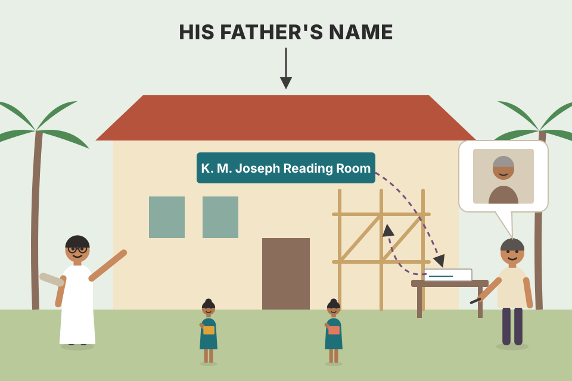
A school in a Kerala town needs a new library, so the headmaster tells a wealthy old student: "We would like to call it the K. M. Joseph Reading Room, after your father." The cheque arrives within the week. The children in the rabbit story did the same work for the same reward: their name on something that would last a little while.
Where it breaks: the old student already loved the school; the name sealed it. Thomson was a hard-headed railway boss, and the name alone would not have sold rails if Carnegie's steel had been worse or dearer. The name opened the door; the product had to walk through it.
What's happening behind it
The book's explanation: people will put in effort for something that carries their name, because the name links the thing to them. The children fed rabbits, and a railway president was predisposed to buy from a mill that honoured him.
Beyond the book: psychologists call a related effect the name-letter effect: people tend to prefer the letters in their own name (Jozef Nuttin, 1985), a sign of how much self-regard attaches to a name. Marketers use the same lever when they let customers put their name on a product (the "Share a Coke" bottles with first names were a famous example). The Edgar Thomson Works, opened in 1875 in Braddock near Pittsburgh, is still a working steel mill today.
At work
The engineering version of the rabbit trick is credit by name. Name the internal tool after the idea, but credit the person in the README; call the pattern "Meera's retry wrapper" in the design doc if she invented it; list contributors by name in the release notes. People maintain, defend and improve the things that carry their names.
Careful: it must be honest credit. Naming something after a senior stakeholder only to win their approval is the Edgar Thomson move without the sincerity, and in a modern org it reads as politics.
Arousing an eager want, by appealing to what the other person values: Ch.3.
06 · THE STEEL KING, PART 2
Carnegie, Pullman and the name on the new company
pdf p91
The second Andrew Carnegie story is the rabbit lesson at the scale of an industry.
Central Transportation Co. (Carnegie)vs George Pullman's companyprize: Union Pacific's sleeping-car businessSt. Nicholas Hotel, New York
The fight. The prize was the Union Pacific Railroad's sleeping-car business. Two firms wanted it: Carnegie's Central Transportation Company and George Pullman's company. Their price-cutting had reached the point where whoever won would make no money. Both men travelled to New York to lobby the Union Pacific's directors.
The meeting. They ran into each other one evening at the St. Nicholas Hotel. Carnegie opened with a friendly greeting and the line quoted below; Pullman, wary, wanted to know what he meant.
"Aren't we making a couple of fools of ourselves?"Andrew Carnegie to George Pullman, as told by Carnegie (pdf p91)
The pitch. Join forces, Carnegie suggested, and painted an attractive picture of what a combined company could do that two warring ones could not. Pullman paid close attention and still held back. Then came his question: under what name would this new company trade? Without a pause Carnegie offered Pullman's own: the Pullman Palace Car Company.
The result. Pullman brightened at once and suggested they continue upstairs in his room. According to the author, what followed was a landmark in American industry.
Step through: the St. Nicholas Hotel
His habit with workers. The author counts this habit (keeping friends' and partners' names in mind, and honouring them) among the keys to Andrew Carnegie's leadership. Carnegie liked to say he knew many mill hands on first-name terms, and claimed his mills never had a strike during the years he ran them himself.
Beyond the book: the record is messier
The best-known labour battle in American steel history, the Homestead strike of 1892, happened at a Carnegie plant. Carnegie was away in Scotland at the time and his partner Henry Clay Frick was running things, which is how the "while personally in charge" boast survives, but it is a thin defence: the lockout and the violence at Homestead were carried out under policies Carnegie had approved. Historians also describe the Pullman merger more intricately than this neat hotel scene. The names-matter point stands; the "no strikes" claim should be read as a boast, not a record.
Picture it
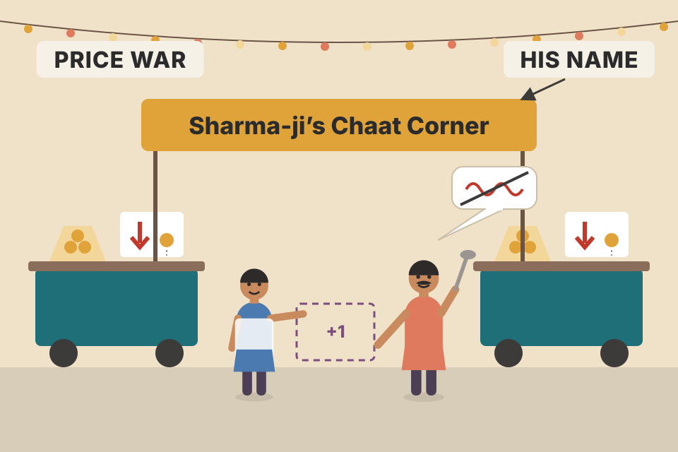
Two chaat stalls on the same street in Indore have been undercutting each other for months, and both are now selling pani puri at a loss. One owner walks over and says: "Let's stop this. Join me, we run one bigger stall, and the board says Sharma-ji's Chaat Corner." Sharma-ji, who was ready to argue about the split, starts discussing where to put the second counter.
Where it breaks: a sign on a stall is cheap; Pullman also got real money and control from the merger. The name did not replace a good deal; it removed the last bit of pride standing in the way of one.
What's happening behind it
The book's explanation: Pullman's hesitation was about more than numbers. Merging with a rival feels like losing. Putting Pullman's name on the new company turned "giving in to Carnegie" into "building something that will carry my name", and his pride switched from blocking the deal to backing it.
Beyond the book: negotiation researchers distinguish positions from interests (Fisher and Ury, Getting to Yes, 1981). Pullman's position was "I don't want to merge"; one of his interests was recognition. Carnegie gave up something that cost him little (the name) to satisfy an interest worth a lot to the other side, a classic way to create value in a deal.
At work
Two teams have each built a half-finished internal deployment tool and are quietly competing for adoption. The lead of one team proposes merging them, and suggests the merged tool keep the other team's name and repository, with both teams as maintainers. The other lead had been preparing a long doc on why their design was better. Now there is nothing to defend.
Interview angle. "Tell me about a time you resolved a conflict between teams." A strong answer shows you found what the other side cared about (credit, ownership, visibility) and gave it to them, rather than winning on technical merit alone.
Worked example: proposing a merge of two services
Winning the argument
"Our notification service already handles 3x your volume. It makes sense for you to migrate onto ours and deprecate yours."
Correct on the numbers, and it makes the other team's last year of work the loser. Expect months of "edge cases" that block migration.
The Pullman move
"We're both burning time maintaining two notification paths. What if we merge into one service, keep your team's templating engine (it's better than ours), and you lead the API design?"
Same technical outcome, but the other team's pride is now on the side of the merge.
Letting the other person feel the idea is theirs: Part Three, Ch.7.
07 · IN BIG COMPANIES AND SMALL MOMENTS
A bank chairman on "quicksand", and a flight attendant who learned her passengers' names
pdf p91–92
Two later, more ordinary examples (probably among those added in the 1981 revision) show the principle outside politics and tycoons.
Benton Love
Head of the bank holding company Texas Commerce Bancshares. As he saw it, companies cool down as they grow, and knowing people's names is a way to bring the warmth back. He was harsher about leaders who claim a poor memory for names: to him, that is a confession that they don't know a large piece of their own business, and that their footing is unsafe (he used the image of quicksand).
Karen Kirsch
Cabin crew at TWA, living in Rancho Palos Verdes, California. On each flight she tried to learn who was in her section and served them by name. Praise followed, both in person and in letters sent to TWA. One traveller who had drifted away from the airline wrote that he would now choose it every time: she had made a big airline feel personal to him, and that was what he cared about.
What the two stories add together. Love's point is about scale: names are not a soft extra for a manager but part of knowing the business, since the business is people. Kirsch's point is about customers: in a job where everyone is in uniform and every passenger is a seat number, the one who uses your name is the one you remember, and the airline gains a loyal customer from it.
Dated detail. TWA no longer exists (it was taken over by American Airlines in 2001). Today, cabin crew on many airlines can see passenger names on their manifests, and some are trained to use them, which is Kirsch's habit turned into policy.
Picture it
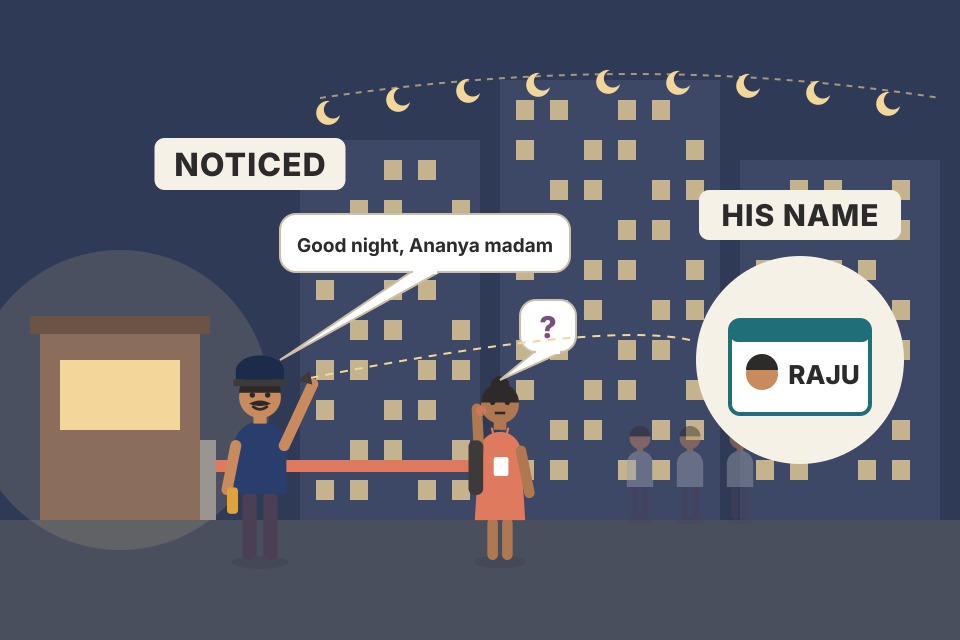
The night guard at a big Bengaluru tech park sees two thousand badges a day. One evening he says "Good night, Ananya madam, late again?" She has walked past him for two years and never known his name. Embarrassed, she asks. It is Raju. She says "Good night, Raju" every evening after that, and the whole building feels a little less like a machine.
Where it breaks: the guard remembering her was a gift; a company that tracks employees' names and habits for monitoring is something else. The warmth comes from a person choosing to notice, not from a system that can't forget.
What's happening behind it
The book's explanation: in large, impersonal settings people feel like numbers. Being named turns you back into a person, and people are grateful to whoever does that for them.
Beyond the book: service research finds that personal recognition is one of the strongest drivers of customer loyalty, and some hotel chains and airlines train staff to use guests' names for this reason. The effect depends on it feeling natural: a name repeated in every sentence (as some sales scripts teach) starts to feel like a technique, and customers notice.
At work
Love's quicksand test for engineering managers: if you lead 40 engineers across five squads, can you name all of them, and one thing each is working on? If not, you are missing part of your system's state. Skip-level 1:1s and a simple team roster with photos fix most of it.
Kirsch for support engineers: on a support escalation, the customer is "ticket #84211" in your tool but "Ms. Fernandes" on the call. Use the name in the first line of your reply, and on the call. It is the cheapest improvement to CSAT you will ever ship.
Connects to
Smiling, the other small signal that changes how service feels: Ch.5.
Making people feel important, especially those others overlook: Ch.9.
08 · NAMES THAT OUTLIVE US
Barnum's $25,000 offer, and the names on libraries, windows and buildings
pdf p92
Carnegie now widens the claim: pride in a name runs so deep that people will pay almost anything to make it outlive them.
P. T. Barnum, the brash, hard-nosed showman who was the most famous entertainer of his era, had daughters but no son to pass his surname on. He tried to buy a fix: $25,000 to his grandson C. H. Seeley if he would add "Barnum" to his name.
Patrons. For centuries, aristocrats and the very rich funded painters, composers and writers, and in return the finished works carried a dedication to them.
Libraries and museums got many of their finest collections from donors who wanted their names remembered. In New York, the Public Library holds the Astor and Lenox collections, and the Metropolitan Museum's galleries honour Benjamin Altman and J. P. Morgan.
Churches are decorated with stained-glass windows that carry the names of their donors.
Universities: many campus buildings carry the names of donors who gave large sums for that honour.
The point. If the richest and proudest people spend fortunes to keep their names alive, then every ordinary person feels a small version of the same wish. Remembering someone's name is the everyday, free version of putting it on a building.
Picture it
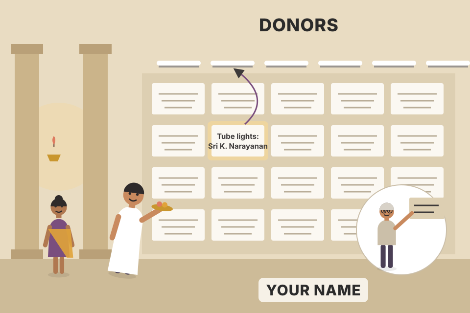
Walk into almost any temple in South India and look at the walls: small marble plaques listing donors and what they paid for ("Tube lights donated by Sri K. Narayanan, Mylapore"). Nobody needs to know who paid for the tube lights, but the donor wanted his name there, and plenty of people read it.
Where it breaks: the plaque lasts for decades without anyone doing anything. A remembered name has to be kept alive by you, person by person, each time you meet them, which is harder and worth more.
What's happening behind it
The book's explanation: a name stands for the person, so keeping the name alive feels like keeping a part of yourself alive. That is why people pay so much for it.
Beyond the book: psychologists in the "terror management" tradition (Solomon, Greenberg and Pyszczynski) argue that much human striving is a way of coping with mortality, and that leaving a lasting mark, including a name on something, is one of the main ways people do it. Fundraisers know this well; "naming rights" are a standard tier in almost every university and hospital campaign.
At work
Engineers leave names too: in commit history, in CODEOWNERS, in the "authors" line of a design doc, in the name of a service someone built in a hackathon. When you rewrite or retire a system, acknowledge the original author by name ("This replaces Vikram's 2019 batch pipeline, which carried us through three years of growth"). It costs one sentence and spares someone the feeling that their work was erased.
Connects to
Everyone's need to feel important, and how the famous showed it: Ch.2 The Big Secret.
09 · THE "TOO BUSY" EXCUSE
Franklin Roosevelt, a hand-controlled car, and the shy mechanic he met once
pdf p92–94
Why most people forget names. Carnegie's diagnosis is blunt: it is not a bad memory, it is a skipped effort. Learning a name takes three small jobs (focus on it when you hear it, say it again, lock it in), and most of us skip all three, then blame our schedules.
The counter-example. No schedule was fuller than a President's, yet Franklin D. Roosevelt bothered to learn the names of the mechanics he met. Carnegie's evidence is a letter he received from W. F. Chamberlain of the Chrysler organisation. Here is what it describes, in our words.
Chrysler built a special carW. F. Chamberlain + a mechanicthe White HouseFederal Reserve Board kept waiting 30 minutes
Why the car. Roosevelt's legs were paralysed, so he could not drive a standard car. Chrysler built one that could be driven entirely by hand, and Chamberlain brought it to the White House, together with a mechanic. Chamberlain's summary: he taught the President to handle a car full of unusual controls, and the President taught him a great deal about handling people.
What Roosevelt did, in order:
He greeted Chamberlain by name, was cheerful and pleasant, and put him at ease.
He showed real interest in everything Chamberlain had to show and explain. With a crowd gathered round, he said he thought the car was marvellous, admitted he had no idea what made it go, and said he would love the time to take it apart and see how it worked.
When friends and staff admired it, he thanked Chamberlain in front of them for the time and effort he had put into it.
He noticed and praised the details: the radiator, the special rear-view mirror, the clock, the spotlight, the upholstery, the driver's seating position, and the fitted suitcases in the boot with his monogram on each. As Chamberlain saw it, Roosevelt singled out exactly the details he had worked hardest on.
He made sure others saw these features too: Eleanor Roosevelt, Labor Secretary Frances Perkins, and his own secretary. He even included George, the old White House porter, telling him to look after the luggage carefully.
Only when the driving lesson was over did he mention that the Federal Reserve Board had been kept waiting for half an hour, and excuse himself to go back to them.
The mechanic. Chamberlain had brought a mechanic, a shy man who stayed in the background. He had been introduced on arrival and never said a word to the President afterwards; Roosevelt had heard his name just once. Even so, as the visit ended, Roosevelt went looking for him, took his hand, used his name, and thanked him for making the trip to Washington. Chamberlain could tell the thanks were heartfelt, not routine.
Afterwards. A few days after getting back to New York, Chamberlain received a signed photograph of Roosevelt and a short note thanking him again. He wrote that he could not imagine how the President found time.
Carnegie's conclusion. Roosevelt understood that remembering names and making people feel important is about the easiest, plainest and most valuable way there is to earn goodwill. Few of us bother. Think how often you are introduced to someone, talk for a few minutes, and have already lost their name before you part.
Dated wording. "Miss Perkins" was Frances Perkins, Secretary of Labor and the first woman in a US Cabinet; today we would just say Secretary Perkins. Roosevelt's paralysis came from an illness (long believed to be polio) in 1921, which he largely hid from the public.
Picture it
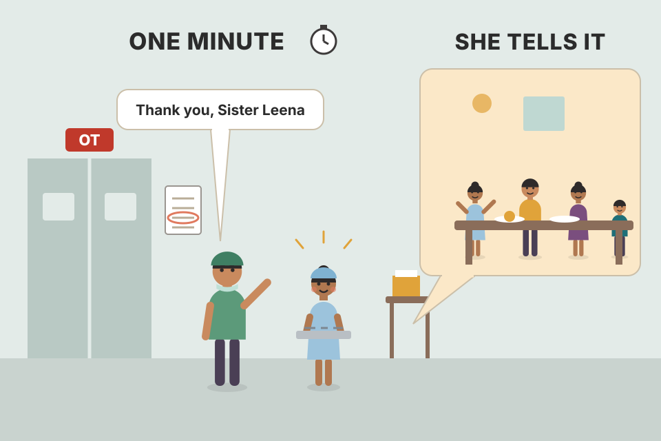
A busy cardiac surgeon in Mumbai finishes a long operation, and on the way out stops by the junior nurse who handed him instruments: "Thank you, Sister Leena. Clean work today." He met her once, on the roster that morning. Leena tells the story to her family that night.
Where it breaks: a surgeon's day is busy, but Roosevelt's was busier still: a Federal Reserve Board was waiting. If he could find the minute, the "too busy" excuse breaks for almost everyone. The analogy undersells the point.
What's happening behind it
The book's explanation: the name was only part of it. Roosevelt combined it with sincere interest, specific praise of work the person cared about, and public recognition, which is why Chamberlain felt important, not just greeted. With the mechanic, the name did almost all the work: being remembered by the President after one introduction told him he had counted.
Beyond the book: the "too busy" excuse hides the real cause. Memory researchers point out that we usually forget a name we have just heard because we never encoded it: during an introduction we are busy thinking about what to say next, so the name goes in once and is never rehearsed. That is a failure of attention, not of memory, which is exactly what Carnegie means by not taking the time to concentrate and repeat.
At work
The mechanic in the background has an obvious modern version: the junior engineer who joined the incident call, the contractor who set up the build agents, the designer who sat silently through the architecture review. They are introduced once, often in a list. A lead who later says "Thanks, Sameer, for the dashboards; we used them all night" is doing what Roosevelt did. The Chamberlain version is specific praise in public: "The rollback was smooth because Divya's runbook covered the exact failure mode", said in front of the director.
Interview angle. "How do you recognise your team's work?" Talk about naming specific people and specific contributions, in the forums where it counts, and mention that you include the quiet contributors, not only the loudest.
Connects to
Sincere, specific appreciation: Ch.2. Genuine interest in what people have made: Ch.4.
Statesmanship or oblivion: Napoleon III's five steps for fixing a name
pdf p94
The politician's lesson. Carnegie quotes one of the first things a politician learns:
"To recall a voter's name is statesmanship. To forget it is oblivion."A politicians' saying, quoted by Carnegie (pdf p94)
Business and social life, Carnegie adds, run on names nearly as much as elections do.
The technique. Napoleon III (the first Napoleon's nephew, and Emperor of France) claimed that, however heavy the duties of ruling, he never forgot the name of anyone he met. How he did it was not complicated:
Make sure you heard it. If he did not catch the name clearly, he said he was sorry, he hadn't got it, and asked again.
Ask the spelling if the name was unusual.
Repeat it several times during the conversation.
Link it to the person: their face, the look on it, how they carry themselves.
For important people, write it down. Once on his own, he would write the name out, study it until it stuck, then destroy the note. The written word gave him a visual memory of the name to back up the sound of it (the book calls these eye and ear impressions).
It takes time, and that is the point. Carnegie closes the section with Emerson's remark that good manners are built out of small sacrifices. Asking someone to repeat their name, or spell it, costs a moment of mild awkwardness; that small cost is the courtesy.
Try it: meet five people, then recall them
Below are five people you "meet" at a conference. For each, read the name, say it to yourself twice, and link it to the detail (Napoleon's steps 3 and 4, plus Farley's facts). When ready, press "Next day" and type the names back.
Take your time with the five cards first.
Picture it
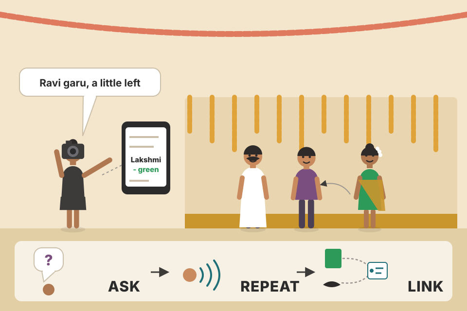
A good wedding photographer at a big Telugu wedding learns the names of the key relatives in the first hour: "Ravi garu, could you stand next to your brother? Lakshmi aunty, a little to the left." She asks each name once, repeats it straight away, ties it to something (the green silk saree, the moustache), and jots the trickiest ones on her phone between shots. By the reception, the family thinks she is one of them.
Where it breaks: the photographer only needs the names for one day. Napoleon wanted them for life, which is why he went the extra step of writing, studying and fixing them, and why a real habit needs some later repetition too.
What's happening behind it
The book's explanation: asking and spelling make sure the name goes in correctly; repeating and associating with the face make it stick; writing it adds a second channel (eye as well as ear).
Beyond the book: each step lines up with something memory research supports. Asking again fixes encoding failure. Saying the name back several times is retrieval practice, and doing it spaced across the conversation (start, middle, goodbye) works better than three times in a row. Linking it to the face is elaborative encoding. Writing it down and studying it adds a visual code (Allan Paivio's dual coding idea). Tearing up the paper forces you to rely on memory instead of the note. One modern addition: look at the name again the next day, because forgetting is steepest in the first 24 hours (Ebbinghaus's forgetting curve).
At work
A practical version for a lead's week:
Interview panel or client call: read the attendee list before the call; say each name once out loud. During introductions, if you miss one, ask: "Sorry, I didn't catch your name." Use each name once in the meeting.
New joiner: ask how they spell and say their name; write it in your 1:1 notes with a phonetic hint and one fact about them.
Big all-hands or offsite: afterwards, write down the names of the five people you talked with most and one thing each said. Message one of them the next day.
Worked example: the introduction you half heard
The usual
"Hi, I'm… (mumble)." "Nice to meet you!" … twenty minutes later, "Great chatting, see you around… buddy."
The name went in once, unheard. By goodbye it is gone, exactly as Carnegie says happens half the time.
Napoleon's way
"Sorry, I didn't catch that." "Rhea." "Rhea, with an h?" "Yes!" … "So Rhea, how long have you been on the payments team?" … "Good to meet you, Rhea."
Heard, spelled, repeated three times across the conversation, and linked to "payments team". Write it down afterwards.
Carnegie's own advice to read slowly, review and apply, from the front matter: Nine suggestions.
11 · IT WORKS FOR EVERYONE
"Hello, Eunice": the sandwich counter and the extra ham
pdf p94–95
Carnegie insists that using names is not a privilege of kings and executives; it works for anyone. The proof is an ordinary lunch line.
Ken NottinghamGeneral Motors, Indianacompany cafeteria1 lettuce leaf → 3
Day one. Ken Nottingham worked for General Motors in Indiana and normally had lunch in the canteen. The sandwich maker there always wore a frown. After a couple of hours on the line, Ken felt, customers were just orders to her, and he was one more. His sandwich came exactly to spec: ham measured on the scale, one lettuce leaf, a small scoop of chips.
Day two. Nothing was different, not the queue, not the frown, except that Ken spotted the name on her badge. He gave her a smile and a "Hello, Eunice" before ordering.
The result. The scale went unused. He got a pile of ham, three lettuce leaves, and so many chips that some tumbled off the plate.
What changed? Nothing about the job, the food or the queue. For a moment, Eunice stopped being "the sandwich counter" and became a person someone had noticed, and she responded the way people do when they are noticed.
Dated wording. The book's closing lines say the name works on everyone from a "waitress" up to top executives; today we would say a server or any frontline worker. And note: Ken read her name from a tag. Use a name tag freely, but naturally, not like a customer reading out a complaint form.
Day one
No name. Scale used. 1 lettuce leaf, a few chips. Scowl.
Day two
"Hello, Eunice" and a smile. Scale forgotten. Ham piled high, 3 lettuce leaves, chips falling off the plate.
Picture it
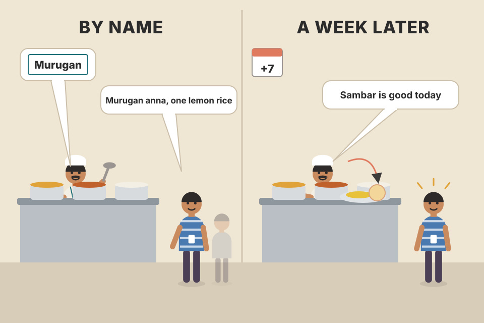
The canteen anna at your office hands out a hundred plates of lemon rice an hour. One day you read "Murugan" on his ID card and say, "Murugan anna, one lemon rice, please." The next week, without asking, you get an extra appalam and a "Sir, today's sambar is good, take some."
Where it breaks: the extra appalam is a nice side effect, not the goal. If you use names only to get bigger portions, people sense the calculation quickly; Ken's story works because the greeting was a small kindness first.
What's happening behind it
The book's explanation: a name sets a person apart from everyone else, and service jobs are full of people who are treated as interchangeable. Saying the name tells them they are seen as themselves, and they answer warmth with warmth.
Beyond the book: this is reciprocity, one of the most reliable patterns in social psychology (Robert Cialdini lists it first among his principles of influence): when someone gives us something, even a small personal recognition, we feel an urge to give back. Research on "invisible" work also finds that frontline staff report much higher job satisfaction when customers treat them as individuals.
At work
Every team has its Eunices: the IT helpdesk person, the office admin who books meeting rooms, the facilities staff, the vendor's on-call engineer who joins your incident bridge. Use their names. When the admin finds you a room in a full building at ten minutes' notice, or the vendor engineer stays on the bridge an extra hour, you will have your three leaves of lettuce.
The six ways together, and making overlooked people feel important: Ch.9.
12 · THE PRINCIPLE
The magic in a name: Principle 3
pdf p95
Carnegie's closing argument, in our words:
Nobody else owns it. Of everything in a conversation, the other person's name is the one item that is entirely theirs.
It marks them out. In a crowd of people, the name is what makes this one distinct.
It raises the stakes of what you say. Attach someone's name to a request or a piece of news and it lands as meant for them, so it counts for more.
Rank doesn't matter. It works on the canteen counter and in the boardroom alike.
Principle 3 of Part Two
Remember that a person's name is to that person the sweetest and most important sound in any language.
How to read the principle. It does not say "flatter people with their names". It says remember that a name matters this much, and let that change what you do: catch it, learn it, spell it right, use it, and never trade it for a nickname of your own.
Self-audit: names this week
Tick what happened at least once in the last seven days. Nobody sees this.
Reflect, then reveal
Think of someone you see often (a colleague, a neighbour, a security guard, a delivery person) whose name you do not know, or are not sure of. Write how you would find it out without awkwardness.
Picture it
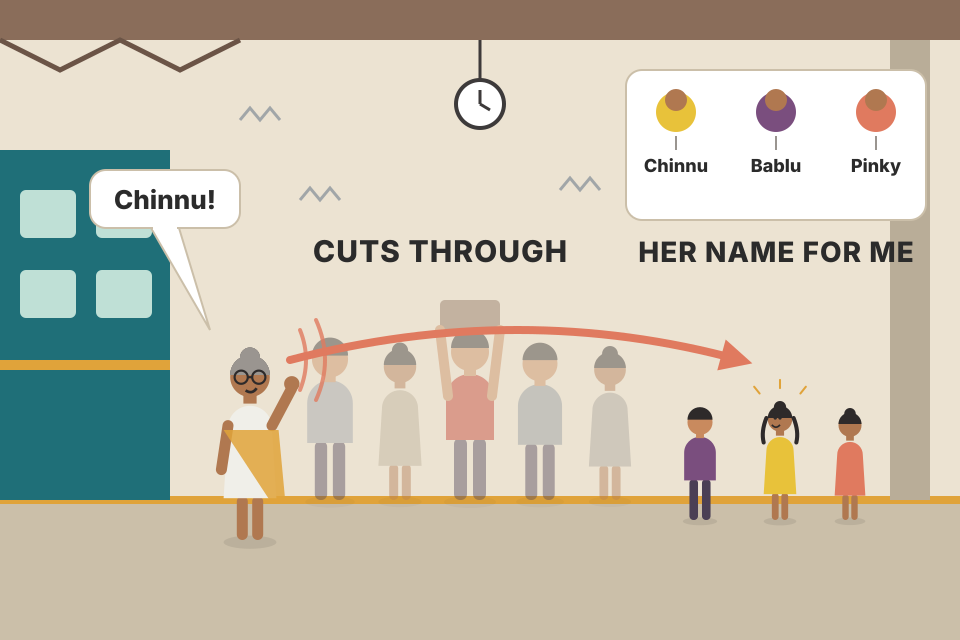
In many Indian families, a grandmother calls each grandchild by a different pet name, and each one knows exactly which voice and which name means "she is calling me". Across a noisy house, in a crowd at a railway station, that one sound cuts through everything.
Where it breaks: a family pet name is a gift built over years of closeness. Colleagues and strangers have not earned that intimacy, so with them, the "sweetest sound" is the name they chose to give you, said correctly.
What's happening behind it
The book's explanation: a name is the label of a person's identity; using it says "I see you, specifically". Everything else in the chapter (Farley's letters, the Pullman company, Eunice's ham) is that one signal at different scales.
Beyond the book: the claim that one's own name is "the sweetest sound" has decent experimental support: own names grab attention involuntarily (the cocktail-party effect), even infants respond to their own names by about four to six months, and EEG studies show a distinct brain response to one's own name even during sleep. What the research does not show is that repeating someone's name often makes them like you more; overused, it can feel like a sales tactic.
At work
The principle in five habits for an engineering lead: learn every new joiner's name and pronunciation in week one; use names, not "@here", when you need something specific; thank people by name in release notes and retros; spell names correctly in docs, tickets and commit trailers; and when you build products, treat the name field as something the user owns, not something your schema gets to reshape.
Interview angle. Use the interviewer's name once when you greet them and once when you thank them at the end. Not more: twice is warm, ten times is a technique.
Connects to
Next in Part Two, listening, the habit that lets you actually catch the name: Ch.7.
All six Part Two principles in one list, in "In a Nutshell": Ch.9.
13 · WRAP-UP
Summary and key terms
pdf p88–95
One habit, a long way. Jim Farley left school at ten after his father's death, worked in a brickyard, and rose to chairman of the Democratic National Committee and Postmaster General, with four honorary degrees before 46. His own explanation: he could call 50,000 people by their first names. It helped him run Roosevelt's winning 1932 campaign.
A system, not a gift. Farley learned each new person's full name plus facts about family, work and politics, and stored them as one picture. In 1932 he sent letters by the hundred daily, toured 20 states (12,000 miles in 19 days), collected the guest lists and sent each person a "Dear Bill / Dear Jane" letter signed "Jim".
The core claim. People care more about their own name than all others combined. Remembering it is a subtle compliment; forgetting or misspelling it puts you at a sharp disadvantage (the Paris bank manager's angry letter).
Hard names matter most. Sid Levy practised "Nicodemus Papadoulos" and said it in full; the customer wept, because in fifteen years nobody had bothered.
Andrew Carnegie knew little about steel but a lot about people: rabbits named after the children who fed them, the Edgar Thomson Steel Works for the railway president he sold to, the Pullman Palace Car Company to win Pullman's agreement, and workers called by first name (with a boast of no strikes while he was in charge; see the Homestead note).
Everyday proof. Benton Love: an executive who can't remember names is on quicksand. Karen Kirsch at TWA won loyal passengers by using their names. Ken Nottingham's "Hello, Eunice" turned one lettuce leaf into three.
People pay to keep their names alive: Barnum's $25,000 offer, patrons' dedications, the Astor, Lenox, Altman and Morgan collections, donors' windows and campus buildings.
"Too busy" is an excuse. Roosevelt remembered a mechanic he met once and thanked him by name, while the Federal Reserve Board waited. Most of us forget a name by goodbye because we never concentrate, repeat and fix it.
The method (Napoleon III): ask again if unclear, ask the spelling, repeat it in the talk, associate it with the face, and for important people write it, study it, tear it up. Good manners are small sacrifices (Emerson).
Principle 3: a person's name is to that person the sweetest and most important sound in any language.
Term or phrase
Meaning on this page
Where
Principle 3 (Part Two)
Remember that a person's name is to that person the sweetest and most important sound in any language.
pdf p95
Subtle compliment
Remembering and easily using a name; praise that needs no words.
pdf p89
Sharp disadvantage
What forgetting or misspelling a name does to you.
pdf p89
Farley's system
Full name + facts about family, business, politics, stored as one picture; followed up later.
pdf p89
The easy nickname
Replacing a hard name with a convenient one ("Nick"); a quiet slight.
pdf p90
The lesson of the rabbits
People will work for something that carries their name.
pdf p90–91
Operating on quicksand
Benton Love: a leader who can't remember names doesn't know a key part of his business.
pdf p91
Statesmanship vs oblivion
The politician's rule: recall a voter's name and win; forget it and be forgotten.
pdf p94
Ear impression / eye impression
Hearing and repeating a name vs writing and looking at it (Napoleon III).
pdf p94
Petty sacrifices
Emerson: good manners are made of small costs, like asking a name again.
pdf p94
Wholly owned
A name belongs completely to its owner and sets them apart from everyone else.
pdf p95
14 · USE IT
Practice this week
beyond the book
Small exercises, each with a way to tell whether it worked. The exercises are ours; the ideas behind them are the chapter's.
Napoleon's first step, every time. For one week, whenever you don't clearly catch a name, ask again on the spot ("Sorry, I didn't catch your name"). Worked if: at the end of the week you can't think of a single introduction where you let a name slide.
The goodbye test. In every new conversation, use the person's name when you say goodbye. Worked if: you notice the moments you can't, and those drop by the end of the week.
The Farley note. After each first meeting (new joiner, client, interviewer), write three lines: name with a pronunciation hint, role, one personal fact. Re-read the note before you next meet them. Worked if: at the next meeting you open with a question about the fact.
Find your Eunice. Learn the name of one person you see daily but have never named (guard, canteen staff, cleaner, helpdesk). Use it every day this week. Worked if: they start greeting you by name too.
Named thanks. In one retro, release note or team message, replace "thanks everyone" with names and what each did. Worked if: someone replies or mentions it later.
Audit a name field. (For your code, not your manners.) Try signing up for your own product as "R. Karthik", "José Núñez" and a 40-character name. Worked if: you find nothing to fix, or you file the tickets.
15 · LIMITS
Where it can go wrong
pdf p88–95 · plus beyond the book
The book's own cautions first.
It takes real effort. Carnegie does not pretend it is easy: names must be concentrated on, repeated and fixed, and Napoleon's method "takes time". The chapter's whole argument is that the effort is worth it, not that it is free.
The name works with sincerity, not instead of it. Roosevelt's thanks to the mechanic worked because, in Chamberlain's account, they were clearly meant and not a formality. Carnegie's next and final Part Two chapters keep returning to this word: sincerely.
A wrong name is worse than none. The Paris letter shows that a careless attempt at personalisation (a form letter with a misspelled name) can cost more than no personalisation at all.
Beyond the book: our critique
Overuse turns warmth into a technique. Sales scripts that repeat a customer's name every sentence feel manipulative. Use a name at the greeting, once when it matters, and at goodbye.
Mass "personalisation" is not Farley. Farley's letters were form letters too, but his campaign workers had actually met him. A "Hi {first_name}" email from a company you never dealt with does not create the same feeling, and a merge failure ("Hi R.,") makes things worse.
Culture decides which name, and how. In many Indian workplaces juniors address seniors as "sir" or "ma'am", or add "-ji", "garu", "anna", "akka". Using a senior's bare first name can come across as rude, and using a junior's full formal name can sound cold. In parts of East Asia, family names come first. The principle holds (get the person's name right); the form depends on context, so follow their lead or ask.
Don't dig for surnames. In India a surname can signal caste, religion or region. Asking for it (or commenting on it) to "place" someone is the opposite of Carnegie's point. Use the name people offer.
Remembering facts can feel like surveillance. Farley's hollyhocks are charming when the person told you about them. Bringing up something you found by looking someone up online, without them mentioning it, can feel intrusive.
Some people have real difficulty with names or faces. Face blindness (prosopagnosia) and some memory conditions are real. If someone forgets your name, don't assume they don't care. And if you struggle, it's fine to say so and rely on notes.
The historical record is tidied up. Carnegie's "no strikes" boast sits uneasily with the 1892 Homestead strike at a Carnegie plant, and the Pullman merger was messier than a one-evening hotel scene. Farley later fell out with Roosevelt over the third-term run in 1940. The stories illustrate a habit; they are not complete history.
16 · TEST YOURSELF
Check yourself
pdf p88–95
Try to answer before opening each one. The first half is story recall; the second half is using the principle.
1. How did Jim Farley's childhood begin, and how far did he rise?
In 1898 his father was killed by a playful horse in Stony Point, New York, so the family (his wife and three sons) had only a small insurance payout. Ten-year-old Jim took a brickyard job and never got to high school. Before 46 he had four honorary degrees and had been chairman of the Democratic National Committee and Postmaster General.
2. What was Farley's answer when Carnegie said he could name 10,000 people?
That Carnegie was wrong: it was 50,000 people, by first name. (He had first joked that the secret was "hard work".)
3. Describe Farley's system and how he used it in 1932.
For each new acquaintance he learned the full name and facts about family, business and politics, fixed as one picture, so a year later he could ask about the family or the hollyhocks. In 1932 he sent letters by the hundred every day for months, travelled 12,000 miles through 20 states in 19 days, asked one contact per town for the guest list, and sent everyone a personal letter ("Dear Bill"/"Dear Jane", signed "Jim").
4. What happened with Carnegie's Paris form letters?
Local typists with weak English typed the names, and some came out wrong. One of them belonged to the head of a big American bank's Paris office, who wrote back an angry rebuke over the misspelling.
5. Why did Nicodemus Papadoulos cry?
Sid Levy, a salesman, practised his full name and greeted him with it. Everyone else called him "Nick"; in fifteen years in the country, nobody had made the effort to use his real name.
6. Give three ways Andrew Carnegie used names.
As a boy he named baby rabbits after the children who gathered clover and dandelions to feed them; he named a Pittsburgh steel mill the Edgar Thomson Steel Works to sell rails to the Pennsylvania Railroad's president; and he proposed calling the merged sleeping-car company the Pullman Palace Car Company to win George Pullman over. He also knew many of his mill workers on first-name terms.
7. What did Roosevelt do for Chamberlain, and for the mechanic?
For Chamberlain: used his name, showed real interest, thanked him publicly, praised specific details (mirror, clock, spotlight, upholstery, seat, monogrammed suitcases), showed them to Mrs. Roosevelt, Secretary Perkins, his secretary and the porter George, and later sent a signed photo and note. For the shy mechanic, whose name he heard once: sought him out, shook hands, used his name and thanked him sincerely.
8. What are Napoleon III's five steps?
If you don't hear the name clearly, say so and ask again; ask the spelling if unusual; repeat it several times in the conversation; link it to the person's face, expression and look; and for important people, write it down when alone, study it, fix it in mind and tear up the paper (eye impression plus ear impression).
9. What changed between Ken Nottingham's two visits to the sandwich counter?
Only that he read her name tag, smiled and said "Hello, Eunice". Day one: ham weighed, one lettuce leaf, a few chips. Day two: scale forgotten, ham piled on, three lettuce leaves, chips spilling off the plate.
10. Why does Carnegie say most people forget names, and how does he answer the usual excuse?
They skip the effort of focusing on the name, saying it again and locking it in, and they say they're too busy. His answer: they are not busier than Roosevelt, who remembered a mechanic he met once.
11. Application: a client contact's name is long and you've heard your team shorten it. You have a call tomorrow. What would Carnegie do?
The Sid Levy move: practise the full name beforehand, use it in the greeting, and check you said it right. If they offer a short form, use that from then on; it is their choice, not yours.
12. Application: on a call, you missed a new colleague's name and it is now ten minutes in. What do you do?
Ask, briefly and honestly: "Sorry, I didn't catch your name earlier." Napoleon's first step. A few seconds of awkwardness is the "petty sacrifice" of good manners, and far better than avoiding the name for months.
13. Application: two teams have competing internal tools and you want them merged. What does the Pullman story suggest?
Find what the other side's pride is attached to (their tool's name, their design, ownership) and give it to them in the merged result, so their pride backs the merge instead of resisting it.
14. Engineering: how can a system you build commit the Paris typists' mistake?
By mangling names: forcing ASCII, splitting full names into first/last so "R. Karthik" becomes "R.", truncating long names, or auto-capitalising particles. Store names as entered, ask what to call people, and test with real names.
15. Interview: "How do you build trust with a new team?" How does this chapter shape a strong answer?
Give concrete habits: learning every name and pronunciation in week one, keeping short notes on each person, thanking people by name for specific work, including quiet contributors. That shows Farley's and Roosevelt's habits rather than a vague "I'm a people person".
17 · SOURCES
References
pdf p88–95
Book pages and other sources used on this page
Dale Carnegie, How to Win Friends and Influence People, revised edition (1981; Simon & Schuster 2009 printing), Part Two, Chapter 3, "If You Don't Do This, You Are Headed for Trouble", pdf p88–95. Stories by page: Jim Farley p88–89; Farley's system and 1932 campaign p89; own-name claim and the Paris bank manager p89; Sid Levy and Nicodemus Papadoulos p90; Andrew Carnegie's rabbits and the Edgar Thomson Steel Works p90; Carnegie and Pullman, workers' names p91; Benton Love p91; Karen Kirsch p91–92; Barnum, patrons, libraries, museums, windows, campus buildings p92; "too busy" and Roosevelt with W. F. Chamberlain p92–94; statesmanship and oblivion, Napoleon III, Emerson p94; Ken Nottingham and Eunice p94–95; the magic of a name and Principle 3 p95.
W. F. Chamberlain's letter to Carnegie (quoted at length in the chapter, pdf p92–93). Retold briefly here as a list of events, not reproduced.
Beyond the book (named where used): N. Moray (1959), attention and one's own name in dichotic listening; D. Carmody and M. Lewis (2006), brain activation to one's own name; J. Nuttin (1985), the name-letter effect; G. McWeeny et al. (1987), the Baker/baker effect; R. Kohli and D. Solórzano (2012), name mispronunciation in schools; A. Paivio, dual coding theory; H. Ebbinghaus, the forgetting curve; R. Fisher and W. Ury, Getting to Yes (1981); R. Cialdini, Influence (reciprocity); S. Solomon, J. Greenberg and T. Pyszczynski, terror management theory; D. Mandel, P. Jusczyk and D. Pisoni (1995), infants' recognition of their own names; F. Perrin et al. (1999), brain response to own name during sleep.
Historical notes (Beyond the book): James A. Farley's term as Postmaster General (1933–1940) and his 1940 break with Roosevelt; the Edgar Thomson Works at Braddock, Pennsylvania (1875); the Homestead strike (1892); Frances Perkins, first woman in a US Cabinet; TWA's acquisition by American Airlines (2001).